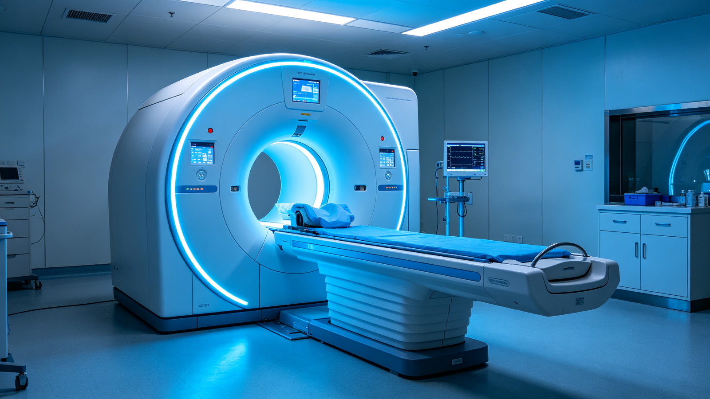
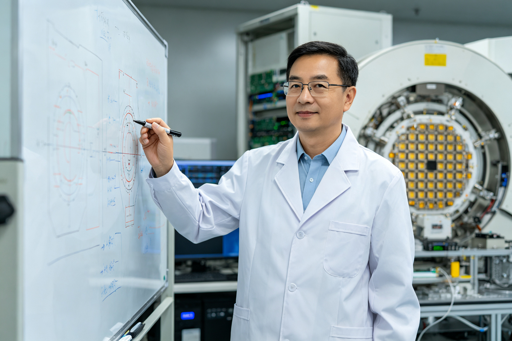
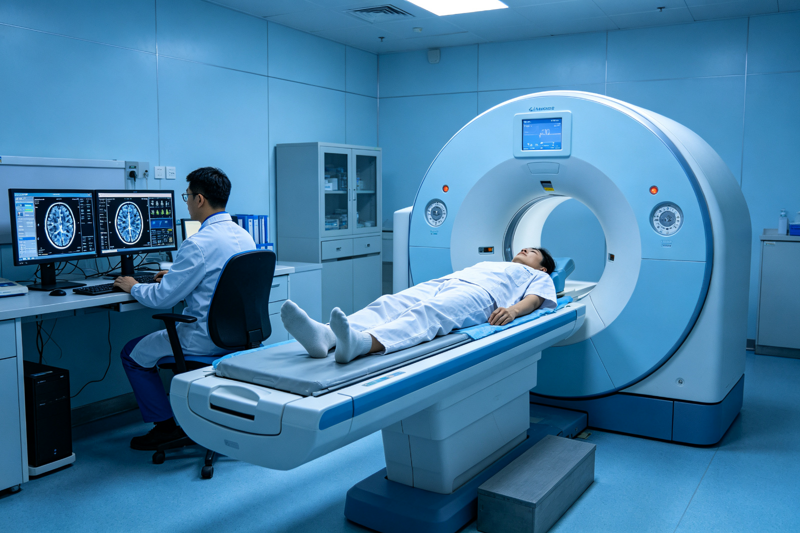
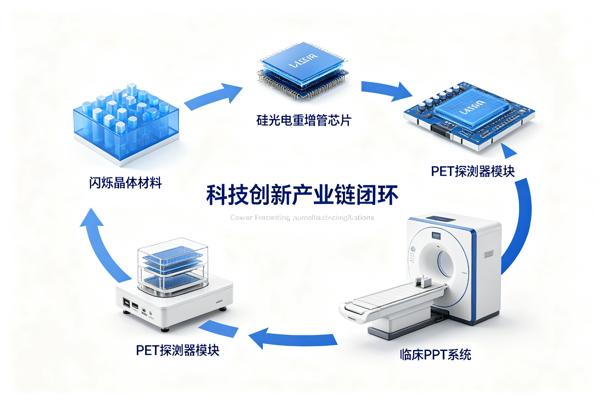
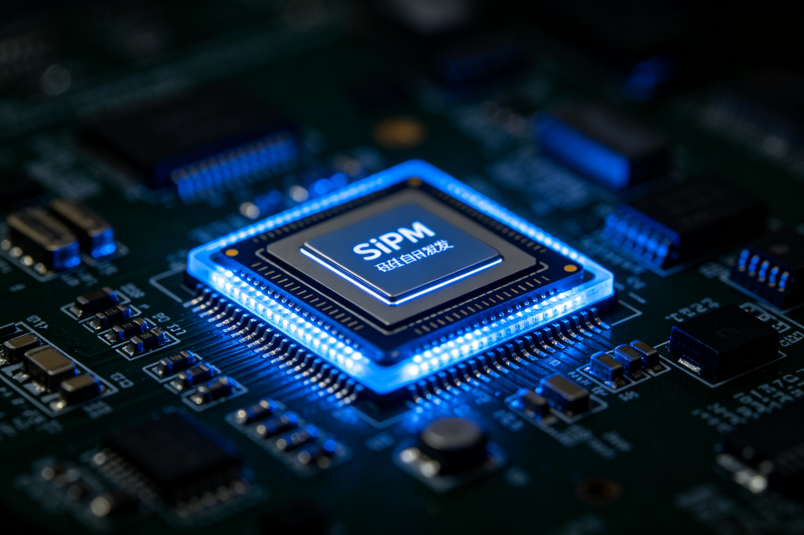

中国原创！华中科技大学教授科研成果打破垄断，一项发明申请500余项专利
近日，国家药品监督管理局在网上公布了准产批件发布通知，"正电子发射及X射线计算机断层成像扫描系统"（以下简称全数字PET）赫然在列。这是我国科学家用19年的心血，凝炼一系列自主原创技术打造的全数字PET，这意味着，我国具有自主知识产权的全数字PET可开始量产，并将打破国内PET市场长期被进口仪器垄断的局面。而这款PET的发明者就是华中科技大学谢庆国教授。

一、真正的国际原创 定义"数字PET"
PET，即正电子发射断层成像仪，是精准医学的重要设备，主要用于肿瘤、心脑血管疾病等病理诊断，与CT、核磁并称医学影像"三大件"。长期以来，由于技术门槛极高，PET研发一直被西方跨国巨头垄断，成为我国医疗健康领域的瓶颈之一。
2001年，谢庆国创立了他的实验室。2004年，他首次提出MVT全数字采样方法；2009年研制出全数字、模块化PET探测器。2010年，全球首台数字PET科学仪器问世；2015年，鄂州市委市政府将数字PET列为"1号科技工程"进行转化，当年8月，全球首台临床全数字PET设备问世。2018年，全数字PET/CT完成临床试验。
- 2001年，团队成立；
- 2004年，提出MVT全数字PET方法；
- 2007年，实现了世界上首台平板PET；
- 2009年，研制出全数字、模块化PET探测器；
- 2010年，全球首台数字PET科学仪器问世；
- 2013年12月，首台数字PET问世；
- 2015年8月，全球首台临床全数字PET设备问世；
- 2017年11月，世界首台质子PET原理机研制成功；
- 2018年8月，全数字PET/CT完成临床试验；
- 2018年9月，世界首台脑部专用全数字PET研制成功；
- 2019年6月，全数字PET获国家药监局准产批件。
其间，正是科技部、国家自然科学基金委和地方各级科技部门看到了数字PET的巨大潜力，大胆充当了"天使投资人"，支撑着团队一路走下来。目前，谢庆国团队累计获得各种项目经费超过2亿元，已申请500多项专利技术，授权200余项。
"现在，数字PET终于拿到第一张医疗器械注册证，这意味着，我们做出了真正的国际原创，这条全新的技术路线被验证是通的、是对的！"谢庆国说，"这其中最让我们感到自豪的是，我们定义了'数字PET'。作为衡量PET产品先进性的金标准，数字PET在某种意义上已成为一种标准、一种定义。"
二、"地狱模式"下通关 量产将造福民众
临床全数字PET产业化负责人张博透露，在资源有限的情况下，目前这款取证产品可以说是用了一个技术挑战难度最大的系统设计，好比是玩游戏直接选了"地狱模式"。在最难的模式下打通了技术路线，后面的工作就易如反掌了！
事实上，PET数字化带来的优势不仅体现在它能发现更小的肿瘤病灶，实现早诊断早治疗，其高度模块化的设计，还具有研发快、搭建快的优势。据张博介绍，2015年首台临床全数字PET样机从设计到最终造出机器，只用了9个月的时间，而且投入的人员和资源都比别人低一个量级。

2018年7月，临床全数字PET在广州中山大学附属第一医院和附属肿瘤医院完成临床试验，验证了其用于影像学诊断时的安全性和有效性。38岁的鼻咽癌患者罗先生参与了临床试验，利用数字PET进行预后评价时发现，癌细胞在肩胛骨、肋骨和股骨发生转移。这一早期发现和精确定位，使罗先生获得及时治疗，目前已基本康复。
而根据2017年2月发布的全国癌症登记点的数据：中国癌症患者的五年生存率仅为30.9％，不及美国的一半。中国癌症患者生存率低的重要原因之一，还是在于癌症的发现和治疗不及时。据了解，目前美国和日本每百万人口拥有PET数量达4台以上，而中国每百万人口不到0.3台。张博告诉记者，国产临床全数字PET一旦实现量产，可望大幅降低民众获取PET检查服务的门槛。
三、打破垄断 形成"创新闭环"
谢庆国介绍，数字PET涵盖了从原理、系统到应用的整个创新链。产业链串接闪烁晶体关键材料、SiPM核心器件、数字PET探测器核心部件、动物全数字PET科学仪器以及临床全数字PET医疗器械，乃至影像应用服务，形成了一个创新闭环，在技术上不容易被任何人卡脖子。

弱光探测芯片是PET的核心器件，一直被西方垄断。为了将来不在产业链上受制于人，谢庆国团队从2006年开始布局新型光电转换器件的研发，终于在2017年成功研制出标准CMOS工艺的全数字硅光电倍增器（SiPM），性能达到国际先进水平，其研发成功对实现中国弱光光电探测技术的自主创新、提升国家工业核心竞争力具重大意义。

"随着数字PET科研高地的形成，外国的顶尖人才被吸引到了中国，而我们也源源不断地将先进的技术和产品输出到国外。"谢庆国说，"随着中国科技实力的提升，从前人才输出、技术输入的情况正在发生反转。数字PET正是典型的例子。"
倪嘉缵院士对中国数字PET产业满怀期待："长久以来，PET的核心技术一直是掌握在国际巨头手中。如今，国产全数字PET拿到市场准入后，最关键的，就是得尽快量产、做大做强，在大规模应用中不断完善全数字PET这条全新的技术路线，让国产的高端医疗器械能够早日造福民众。"